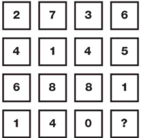

PUZZLE-5

Cevap:
Soru işareti yerine gelmesi gereken sayı 9’dur.
Birinci ve ikinci satırdaki rakamları dörder basamaklı sayılar olarak değerlendirip, bu sayıları toplayın. Toplam üçüncü satırdaki sayıdır. Benzer şekilde birinci satırdaki rakamların oluşturduğu sayı ile dördüncü satırdaki rakamların oluşturduğu sayının toplamı ikinci satırdaki sayı olacaktır.
2736 + 1409 = 4145